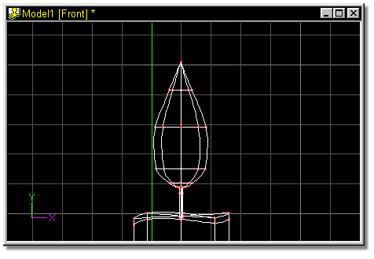
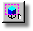
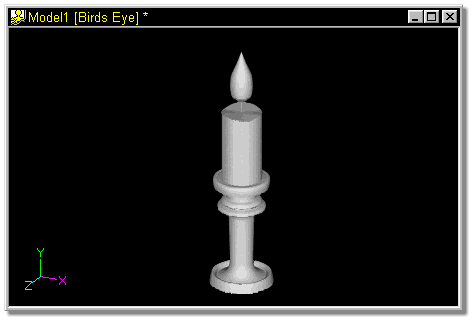

Press the Enter key to get a look at the top of the flame.
It should look similar to figure 48.

Press Shift-Z to Zoom the model to fit in the window.
Click the Turn button, and drag the mouse in the window, starting somewhere
near the middle, and dragging to the left and down until you have a good 3D view
of the model.

Select Save As from the Project drop down, and enter Candle as the project
name.

You’re done, for now……